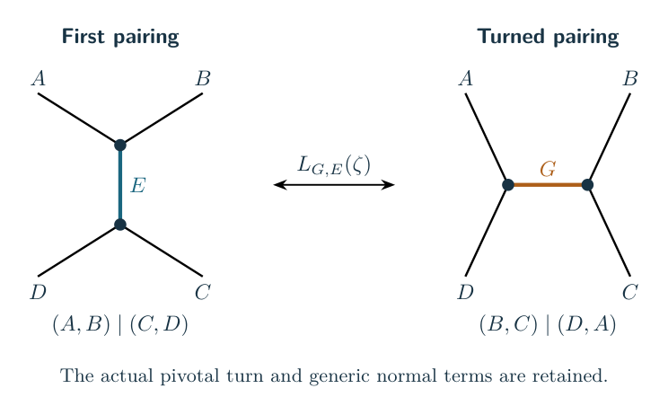
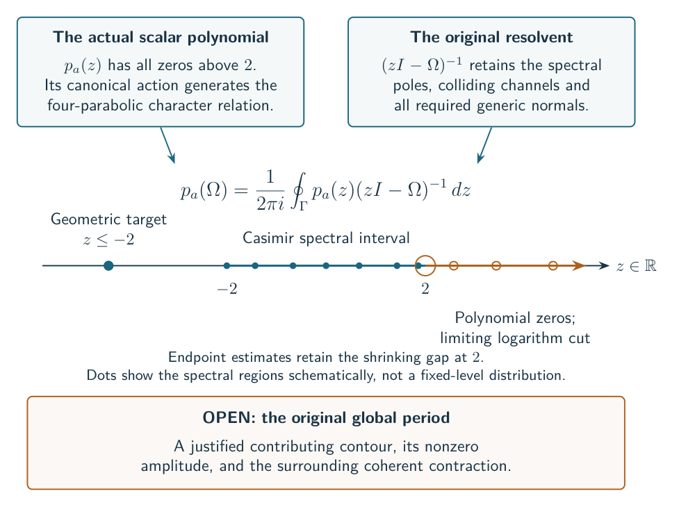

Research library
Choose a question, then follow its main argument and supporting notes. Each route states its scope; the archive keeps the full research history.
Volume equality for knot and link families

Start with the actual theorem: which diagrams, fillings, and normalizations are covered, and where the general conjecture remains open.
Specified families; exact hypotheses matter
Signed Conway knot and link theorem →Supporting arguments (5)
- Arbitrary widths in the actual Conway seed grammar
- Long-full-twist volume equality for every retained robust Conway factor
- The source point is the Casson--Rivin maximum for the actual filling
- Independently long fillings of signed octahedral belt stacks
- Long filling across a finite-order zero of the original source amplitude
The original quantum source

Follow the finite recoupling identities, the terms that survive at roots of unity, and the estimates needed to control the entire source.
Exact local identities and scoped global estimates
The selected complex packet at the geometric frame →Supporting arguments (48)
- A braided second-cut co-source with its actual pivotal weights
- The complete source has a nonzero local marked density and folded Gaussian
- The adjoint finite-jet connection on the original source cycle
- A flat finite-jet connection for the actual tensor source
- A specified generic exceptional-operator lift at nonreal deficient degree
- The actual degree cycle across the finite-head wall
- The exact factorial interpolant with a moving quantum period
- The actual q-Hahn numerator at a deficient integer degree
- An exact generic boundary gauge for the original marked source
- An entire finite source for the completed exceptional operator
- The original physical operator kernel and its positive anti-diagonal packet
- The original operator period has a controlled closing region at two
- Genuine scalar normals have vanishing exponential cost near the closing point
- The two geometric defects lie across the complete-channel support wall
- The original exceptional operator as a continuant period
- The actual geometric target channel and its finite Casimir polynomial
- The original cross-central Green kernel has a selected spectral action
- The source-normalized Racah polynomial has all its zeros above two
- Polynomial control through the target spectral endpoint two
- The full original Casimir resolvent is polynomial at the spectral endpoint
- The actual Casimir prefix has a selected off-spectrum action
- Exact polynomial action away from a physical endpoint
- A positive Fourier partition with the original shared constraints
- The radial positive Fourier comparison does not supply a common geometric frame
- The actual magnetic-energy profile and the full Steinberg cost
- Exact coefficient duality for the original complete-channel polynomial
- The actual matching source as shared cycle Fourier periods
- The full real native cost throughout every shrinking fold window
- Native magnetic energy controls every completed projector jet
- The matching-edge target gauge and its completed projector pairs
- Every fixed generic jet of an actual physical q-Hahn column
- The actual joint magnetic and pair-degree amplitude
- The original matching-edge block, its row measure, and its boundary cost
- A positive tail-free Racah scalar at one actual matching edge
- The actual paired normal on a fixed complex corridor near the fold
- A polynomial bound for the actual partner normal on the physical grid
- Polynomial cost of the actual small-channel generic normals
- The actual partner normal is transverse to a generic collision
- An exact accretive determinant for the joint magnetic source
- Negative roots of the actual complete-channel source polynomial
- The actual q-Hahn column selects a complex leading action
- A uniform nonzero complex amplitude for the actual q-Hahn column
- The actual magnetic polynomial and its complex corridor
- An exact phase compiler for arbitrary fixed augmented plats
- Every actual auxiliary color in the arbitrary-plat source compiler
- Full first-normal bounds for all supported Racah partners
- A generic all-port single Racah kernel with actual Clebsch normalization
- The full original augmented-plat source on its matching graph
Angle optimization and actual geometry

See how source actions become cell volumes, how stationary ports glue, and what certifies the geometry of the actual complement.
Local cells, complete complements, and marked fillings
The general endpoint action and actual volume →Supporting arguments (25)
- The complete source has a nonzero local marked density and folded Gaussian
- The deficient packet retains the diagram regulator and its source character
- A global selected frame with one real deficient degree
- The two geometric defects lie across the complete-channel support wall
- The controlled exceptional kernel tube misses the selected global frame
- A real exceptional target cannot preserve the selected global complement
- Which actual geometric target frames have real magnetic rows?
- Every certified crossing-circle rectangle has ratio at most one
- The selected scalar polynomial generates the actual recoupled transport
- The radial positive Fourier comparison does not supply a common geometric frame
- The native highest-weight energy has a geometric action
- Selected physical factors outside one exact matching-edge block
- The right-angled cut obstructs an all-central selected frame
- A finite criterion for a physical magnetic framing
- A finite certificate for the selected geometric principal phase
- A regular magnetic chart for the complete geometric plat character
- The endpoint channel Hessian is the inverse primitive cusp shape
- Positive marked gluing is unramified at every cusp simultaneously
- The actual Casimir plat phase and its marked representation germ
- Fixed-skeleton long fillings: the proved geometric quantifiers
- A general marked positive gluing certificate, without a convex polyhedron
- The actual augmented plat as a cubic graph with a marked perfect matching
- Hyperbolic volume of the whole cylindrical positive Conway source
- The saturated four-port factorial action is a hyperideal tetrahedron volume
- The actual graph complement from one rectified core and octahedra
A-structures, torsors, and regulators

Keep the selected period, peripheral square roots, and logarithms visible. Separate a marked algebraic branch from a claim about an entire knot A-polynomial.
Marked branches and source regulators; general operator open
An explicit rational gauge for the original source transport →Supporting arguments (17)
- A braided second-cut co-source with its actual pivotal weights
- The adjoint finite-jet connection on the original source cycle
- A flat finite-jet connection for the actual tensor source
- The exact factorial interpolant with a moving quantum period
- The deficient packet retains the diagram regulator and its source character
- The selected scalar polynomial generates the actual recoupled transport
- The actual geometric target channel and its finite Casimir polynomial
- The source-normalized Racah polynomial has all its zeros above two
- The original exceptional operator as a continuant period
- A finite certificate for the selected geometric principal phase
- The actual local source phase generates ordered character transport
- The actual augmented-plat endpoint action has its diagram regulator
- Actual mixed peripheral geometry for arbitrary odd/pure Conway patterns
- The complete geometric disk character is a folded-channel endpoint
- A rational Bloch regulator for every positive-source volume maximum
- A-polynomial volume limits and torsors: current status
- An intrinsic norm torsor from the quantum A-module
Fourier, weighted Cauchy, and energy
Explore the Fourier reformulation and the role of a positive energy bound. Track the remaining distinction between controlling a norm and selecting a nonzero period.
Exact identities and conditional global criteria
The full-source reflection square identity →Supporting arguments (19)
- The original shared Fourier source has an explicit centered quadratic phase
- The physical selected Fourier action has a global Legendre chart
- The selected Fourier action has a nonsingular holomorphic Legendre chart
- A positive Fourier partition with the original shared constraints
- The radial positive Fourier comparison does not supply a common geometric frame
- The actual magnetic-energy profile and the full Steinberg cost
- The native highest-weight energy has a geometric action
- Exact coefficient duality for the original complete-channel polynomial
- The actual matching source as shared cycle Fourier periods
- The full real native cost throughout every shrinking fold window
- Native magnetic energy controls every completed projector jet
- The matching-edge target gauge and its completed projector pairs
- The original matching-edge block, its row measure, and its boundary cost
- Source-preserving weighted Fourier energy for the original plat
- An exact entire Fourier color packet for every augmented plat core
- What a Tauberian argument would need from the original positive Fourier energy
- A finite Fourier identity for coherent Racah normal tails
- Actual quantum-A energy propagation with regulator weights
- The literal planar three-port double and its original Morse source
Cube experiments and general sewing

Keep the cube route available as a test of shared geometric cores. The full-color reflection identity now appears in the Fourier route; its coherent half-packet asymptotic remains open. Earlier projected packets and sewing arguments are preserved here.
Projected volume results; full cube asymptotic open
The four-rung cube packet →Supporting arguments (4)
Obstructions and the general conjecture
Read the current gap first, then the counterexamples that rule out tempting shortcuts. Historical attempts are retained with their original scope and later corrections.
Open problems, counterexamples, and preserved ideas
The current general equality frontier →Supporting arguments (7)
- The right-angled cut obstructs an all-central selected frame
- The general long-twist target at arbitrary bridge number
- Actual Racah cluster projectors cannot share an orthogonal positive metric
- A genuine circle turn changes positive face reflection to full Krein inertia
- Full-twist fillings of the positive Conway class remain links
- Research routes and preserved ideas
- What simplifies at the geometric endpoint, and a magnetic gauge obstruction
The complete archive
These routes are curated entry points. All technical notes, including uncatalogued and historical work, remain available in the searchable archive. A note’s audit and recorded output are linked beside its source when a matching pair exists.